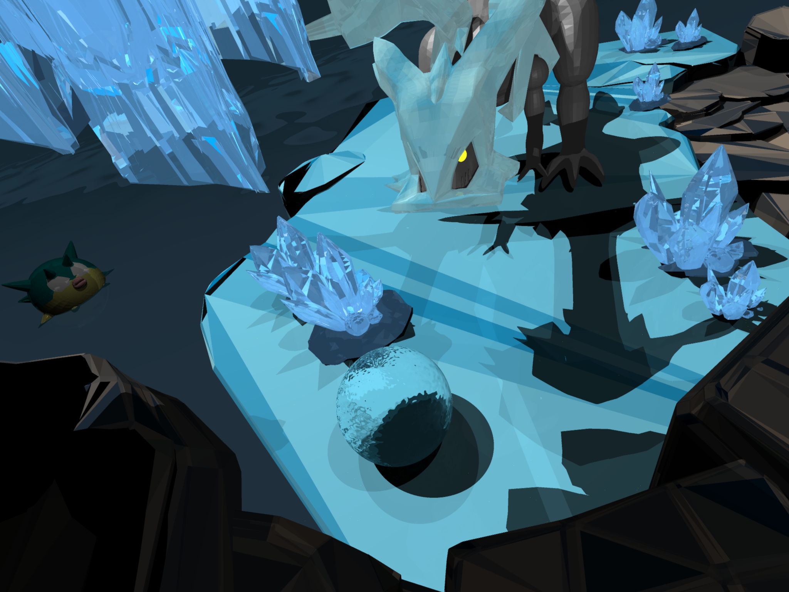
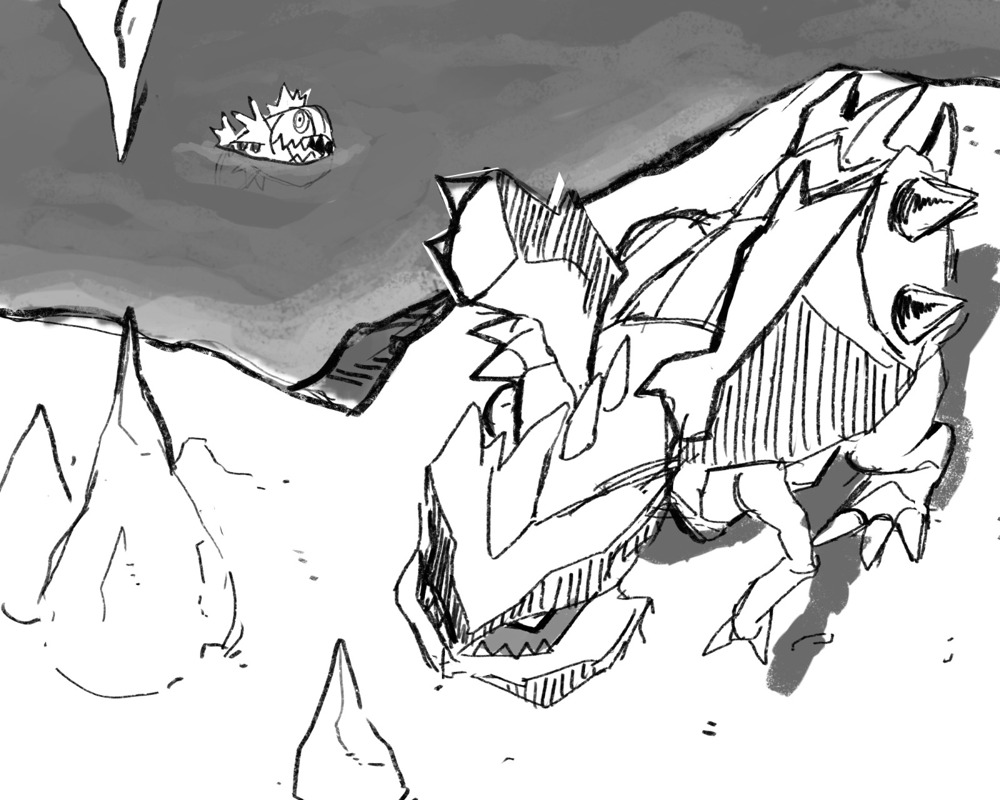

Raytracer
Raytracer developed in C++ for the rendering competition at my university. I got first place :p
Take a look at the final rendered image!
Learn more about the creative process.
Sketch made by Riccardo Piras.
Here's a sketch I made in Blender.